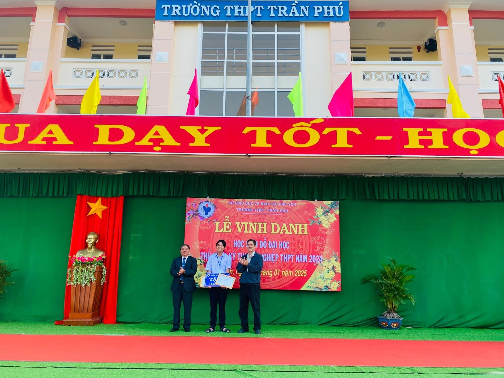

Trang chủ
Trang chủ
Sáng ngày 01/2025, Trường THPT Trần Phú (Phú Yên) đã long trọng tổ chức Lễ vinh danh học sinh đỗ đại học và thủ khoa kỳ thi tốt nghiệp THPT năm 2024. Đây là sự kiện thường niên của nhà trường nhằm ghi nhận, biểu dương những nỗ lực không ngừng của các em học sinh trong kỳ thi quan trọng vừa qua, đồng thời lan tỏa tinh thần học tập, khát vọng chinh phục tri thức đến các thế hệ học sinh tiếp theo.
Buổi lễ có sự tham dự của Ban Giám hiệu nhà trường, thầy cô giáo, đại diện Hội Phụ huynh, các mạnh thường quân, cùng đông đảo học sinh và phụ huynh. Không khí trang trọng, đầy tự hào bao trùm toàn bộ sân trường khi những học sinh ưu tú lần lượt được xướng tên và bước lên bục vinh danh.
Năm 2024, trường THPT Trần Phú tiếp tục gặt hái nhiều thành công khi có hàng trăm học sinh trúng tuyển vào các trường đại học danh tiếng trên cả nước. Đặc biệt, 11 học sinh xuất sắc đỗ thủ khoa các khối thi đã được tuyên dương và nhận phần thưởng trị giá 1.000.000 đồng mỗi em. Tổng giá trị phần thưởng lên đến 11.000.000 đồng, được tài trợ bởi anh Lưu Ngọc Thống, cựu học sinh lớp A2 niên khóa 2006-2009.
Ngoài ra, nhà trường cũng trao tặng 100 chiếc cúp vinh danh, mỗi chiếc trị giá 300.000 đồng, cho 100 học sinh đỗ đại học có thành tích cao nhất. Đây không chỉ là sự ghi nhận những nỗ lực của các em mà còn là nguồn động viên to lớn để các thế hệ học sinh tiếp tục phấn đấu trên con đường học tập.
Một trong những điểm nhấn của buổi lễ là phần vinh danh em Trần Bảo Đăng , học sinh lớp 12A, người đã xuất sắc đạt giải Ba môn Tin học kỳ thi học sinh giỏi cấp Quốc gia. Thành tích này không chỉ là niềm tự hào của cá nhân em mà còn góp phần khẳng định vị thế của Trường THPT Trần Phú trong các kỳ thi học sinh giỏi.
Ghi nhận những nỗ lực và thành tích của em, nhà trường đã trao tặng phần thưởng 15.000.000 đồng. Phát biểu tại buổi lễ, thầy hiệu trưởng gửi lời chúc mừng đến Trần Bảo Đăng, đồng thời hy vọng em sẽ tiếp tục phát huy khả năng của mình khi bước vào giảng đường đại học.
Buổi lễ vinh danh không chỉ là sự kiện để khen thưởng mà còn là cơ hội để toàn thể học sinh nhìn lại quá trình học tập, rèn luyện của mình. Đây là dịp để các em được truyền cảm hứng từ những tấm gương xuất sắc, từ đó nỗ lực hơn nữa trong hành trình chinh phục tri thức.
Phát biểu tại buổi lễ, đại diện Ban Giám hiệu nhà trường khẳng định:
"Những thành tích mà các em đạt được ngày hôm nay là kết quả của quá trình phấn đấu không ngừng nghỉ, sự đồng hành tận tâm của thầy cô và sự quan tâm của gia đình. Nhà trường tin rằng, các em sẽ tiếp tục nỗ lực và gặt hái nhiều thành công hơn nữa trên con đường phía trước."
Buổi lễ khép lại trong niềm vui hân hoan, tự hào của các em học sinh, phụ huynh và thầy cô giáo. Đây không chỉ là sự ghi nhận xứng đáng cho những nỗ lực trong suốt năm học mà còn là nguồn động viên mạnh mẽ để các thế hệ học sinh tiếp tục vươn cao, vươn xa trên con đường tri thức.